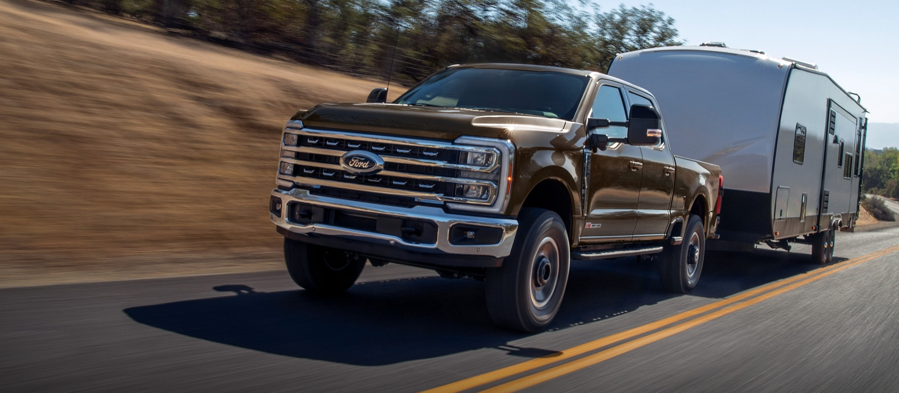

Diesel Muscle
Vehicle Details

Hands-Free Highway Drving
Experience the magic of Hands-Free Highway Drving on 97% of controlled acces
highways in U.S. and Canada 127

Ford Connected Services
Avaliable features you can add-on your Ford vehicle post-purchase to enrich your
ownership experience
Complimentary Mobile Service
Our Ford mobile services technicians can perform a lot for the sames services
remotely that we do in the dealership. Oil and filter changes, brakes, and more.